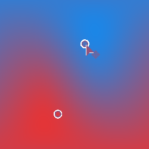

Gradient 2 Points

Gradient 2 Points
In: 3D View/HDRI Tools
Intermediate
Description
Creates a gradient of 2 colors between two user-selected points. Result is adjusted for spherical projection. Similar to Gradient Linear (HDRI), but with two points instead of one.
Parameters
- Point 1 Position:
User-selected first point position. Has handle in 2D view. - Point 1 Color: (Color value)
Color at gradient start. - Point 1 Contrast: 0.0 - 1.0
Contrast of first point mask. - Point 2 Position:
User-selected second point position. Has handle in 2D view. - Point 2 Color: (Color value)
Color at Gradient end. - Point 2 Contrast: 0.0 - 1.0
Contrast of second point mask.
Example Images
